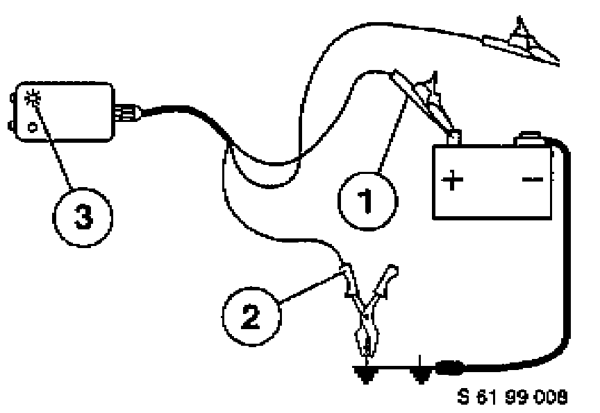
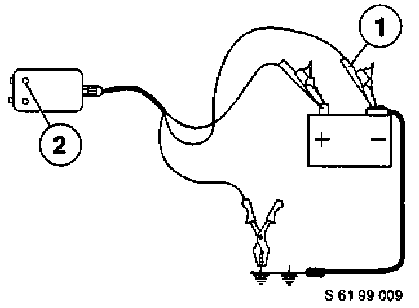
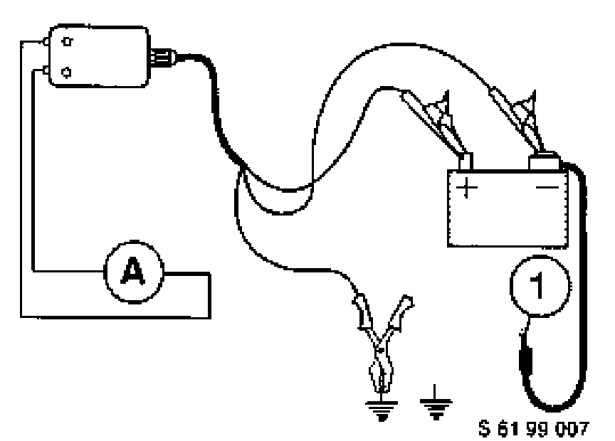
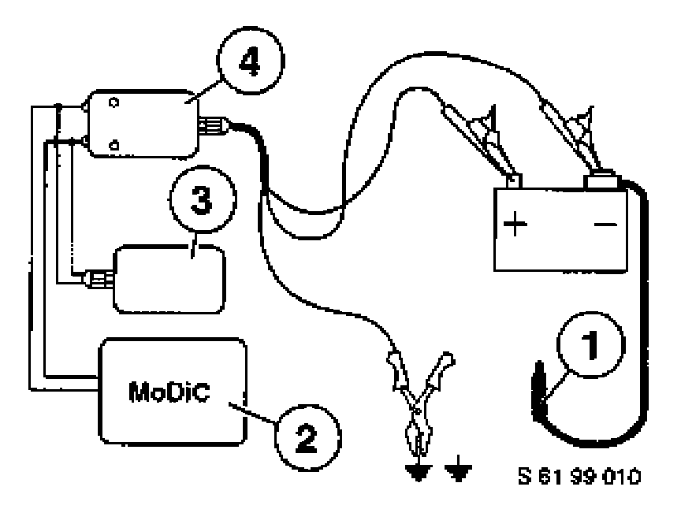
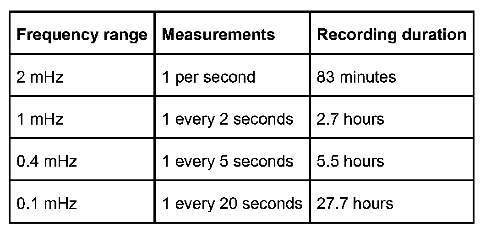

Closed-Circuit Current
Closed-Circuit Current Measurement
Increased closed-circuit currents can occur intermittently or permanently in the vehicle. Faulty control modules may be a possible cause.
The control modules can be reset by disconnecting the battery such that excessively high closed-circuit current no longer occurs.
Using the adapter for the purpose of measuring the closed-circuit current ensures that a bridge is set up to ground before disconnecting the negative terminal of the battery thus preventing a reset of the control modules.
Adapter for closed-circuit current measurement: Order number 61 2 300, Cartool
Measuring closed-circuit current
The measurement is conducted with a multimeter and the adapter for closed-circuit current measurement. The closed-circuit current can alternatively be measured with the MoDiC for the purpose of recording the closed-circuit current over a period of several hours.
Vehicle preparation
- The battery must be sufficiently charged (voltage greater than 12 Volt). The battery should be charged if necessary.
- Disconnect tester or radio head (mobile unit) from the diagnosis socket or the OBD socket.
- Equipment (SA, SZ or SAZ) that is active when the vehicle is shut down, e.g. rodent protection, antitheft alarm system, are to be activated.
- Switch off all other electrical loads, paying particular attention to the telephone and retrofitted optional equipment.
- If the battery is fitted in the engine compartment, the rear lid/tailgate should be closed and locked. Now open the hood (front lid) and completely pull up the switch for the hood contact (workshop setting, simulation for closed hood).
- If the battery is fitted in the luggage compartment, the hood (front lid) should be closed. Now open the trunk lid/tailgate and lock the rotary latch of the trunk lid/tailgate lock with the aid of a screwdriver (simulation for trunk lid/tailgate closed).
- Open driver's door and close again (entry simulation).
- Switch on ignition for at lest 5 seconds and then switch off again (driving simulation).
- Open driver's door again and close (exit simulation).
- Arm vehicle and wait for 16 minutes.
- Once 16 minutes after arming the vehicle have elapsed all electrical loads will be switched off by means of the load cutout facility. The closed-circuit current can now be measured.
Connecting adapter for closed-circuit current measurement
Connect the adapter for closed-circuit current measurement (order number 61 2 300, Cartool) as follows:

- Connect red terminal (batt. +) of adapter to positive terminal of vehicle battery.
- Connect black terminal (chassis) to an easily accessible ground (grounding) point in the vehicle.
- The green LED on the adapter comes on and signals that the adapter is ready for use.

- Connect black terminal (batt. -) of adapter to negative terminal of vehicle battery.
- The green LED goes out thus indicating that the adapter that the adapter has been connected correctly.
Any overload of the adapter is indicated by the red LED coming on. In this case, check the connection of the adapter and correct if necessary. An overload situation also exists when the vehicle is not in closed-circuit current mode (current greater than 4 A) and major loads are connected.
Closed-circuit current measurement with multimeter
A multimeter or the multimeter function of the BMW DIS or BMW MoDiC is used for measuring the closed-circuit current.

To measure the closed-circuit current, connect the multimeter to the adapter and then unscrew the battery ground lead (1) from the central ground terminal point on the body.
NOTE: The battery ground lead should only be disconnected when no further operations are to be carried out on the vehicle.
Particular care must be taken when using a multimeter to ensure that a measuring range greater than/equal to 5 Amps is set on the measuring instrument for initial measurement of the closed-circuit current. This will avoid damage being incurred in the measuring instrument if the vehicle is not in closed-circuit current mode due to a fault in the vehicle electrical system.
A measuring range of 1 or 2 Amps should then be selected for measuring the closed-circuit current. The measuring instrument can be disconnected from the adapter for this purpose.
The type of measurement 2 Amps and measuring range automatic is selected in the multimeter function of the BMW DIS/MoDiC. The multifunction cable MFK1 is used for the measurement.
Setpoints
Depending on the vehicle equipment, the closed-circuit current can reach the following maximum values 16 minutes after turning off the ignition and arming the vehicle:
Series E36: 30 mA
Series E38: 50 mA
Series E39: 40 mA
Series E46: 40 mA
X5, Z8: 40 mA
Closed-circuit current measurement with BMW MoDiC recorder mode
The closed-circuit current can be measured over the long term in recorder mode of the BMW MoDiC. A MoDiC adapter (shunt) order number 61 2 310 that enables current measurement in MoDiC recorder mode is additionally required for this measurement procedure.

Connect (3) MoDiC adapter 61 2 310 in parallel to (4) adapter for closed-circuit current measurement 61 3 300. Connect measuring lead MFK1 to MoDiC (2) and select multimeter measurement function voltage V in the mask.
Recorder mode - operation
The measuring system is set for recorder mode in the mask oscilloscope setting
A measuring range of 1 V or less should be selected for closed-circuit current measurement. In connection with the MoDiC adapter 61 2 310, 1 Volt = 1 Amp. Therefore, a closed-circuit current of 50 mA will correspond to 50 mV.
The frequency range is selected after pressing the recorder mode button on the shield. The frequency range determines how often a measured value is acquired and for how long the measured values are recorded. The higher the frequency the more often a measured value is recorded and the shorter the saved recording duration.
Example:

The BMW MoDiC must be connected to the MoDiC charging station during all long-term measurements.
The measurement is started by pressing the oscilloscope display button on the shield.
NOTE: The saved measured values are deleted by pressing the oscilloscope setting button once again.
Recorder mode - evaluation
Recording of the measured values is ended by pressing the freeze image button on the shield.
The recorded data can then be retrieved by pressing the save button on the shield and with the aid of the "arrow buttons" at the upper edge of the mask.
NOTE: By pressing the freeze image button once again the saved measured values are deleted immediately and a new measurement procedure is started.